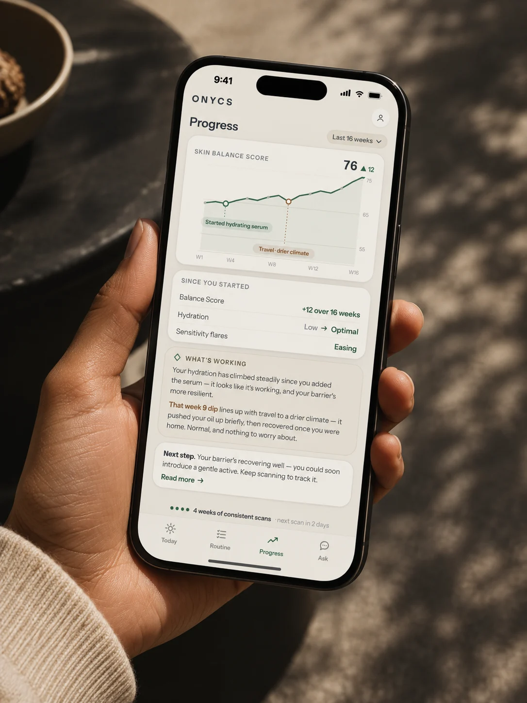
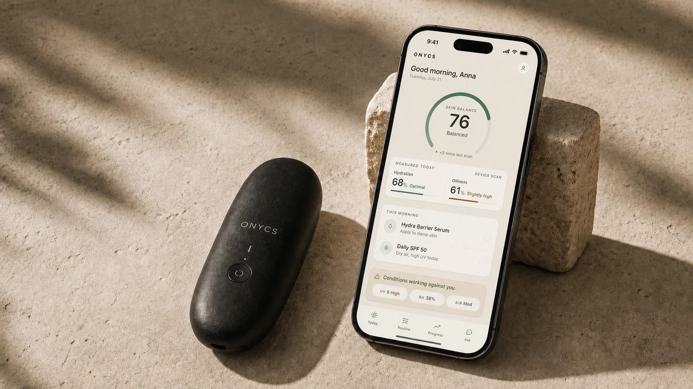
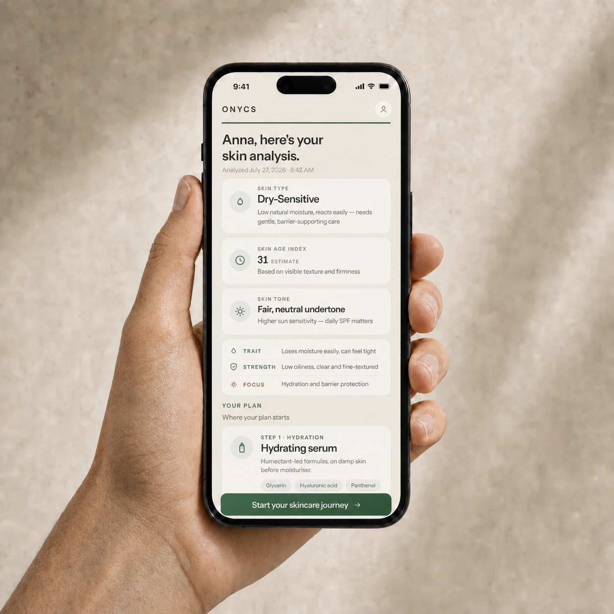
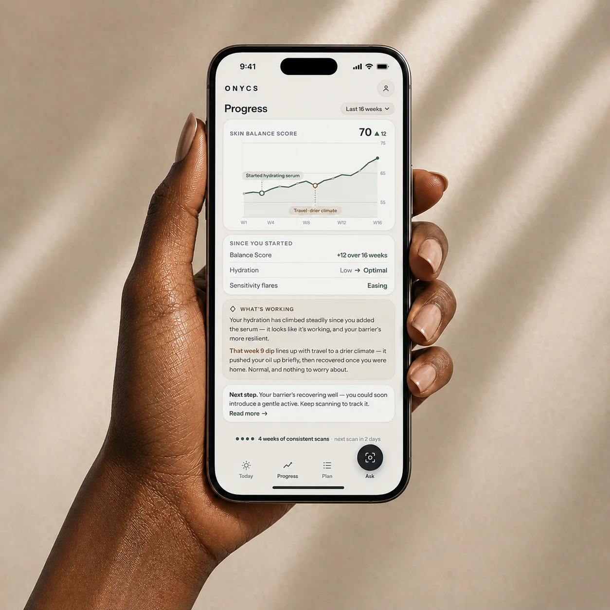
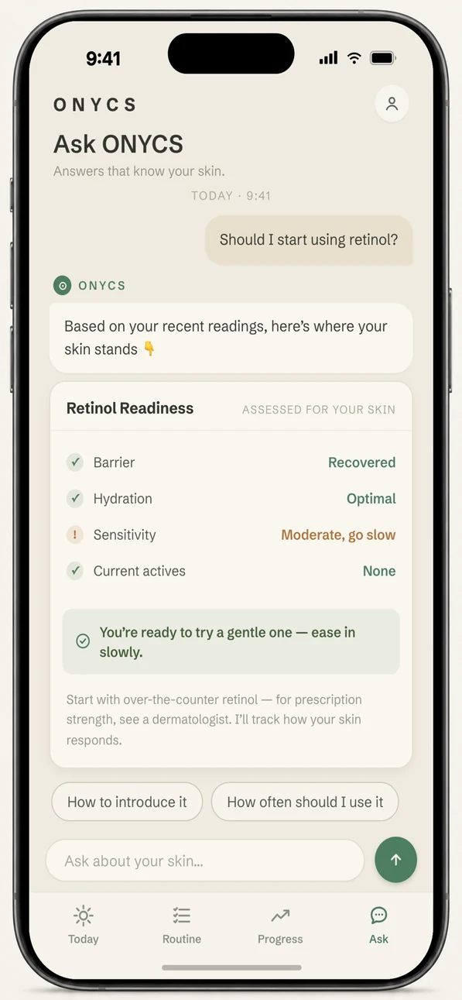

Ask anything, anytime
Ask about your results, a new product, or your routine, and get answers built around your own skin. No more conflicting advice — just clear, personal guidance, shaped for you.
Personal skin intelligence
Scan your skin in seconds and receive personalized skincare guidance based on real measurements.
Built on proven dermatological measurement methods.
How it works
Products tell you what they promise. ONYCS shows you what your skin is actually doing — and turns every new reading into a better next step.
One continuous signal
From today’s scan to tomorrow’s routine.Capture the signals that reveal your skin’s condition.
See what changed, what influenced it, and what it means.
Keep your routine and plan aligned with your skin.
Each scan makes the next decision smarter.

The solution
An AI-native app paired with a handheld device. The device reads your skin; the app turns those readings into insight and a plan made for you. Together, precision skincare that fits in your hand.

Reads hydration and oil directly from your skin in seconds.
Turns each reading, your environment, and history into clear guidance.
The value
Most skincare is guesswork. We buy products on hope — but there’s no one-size-fits-all skin, and finding what works means endless trial and error. Real answers have meant a dermatologist visit: expensive, and once a year at best. ONYCS puts that insight in your pocket — measured, personal, and always current.


Today’s skincare is endless noise — thousands of products, endless opinions, and marketing you can’t tell from real advice. It’s rarely clear what’s right for your skin, because a product that helps one person can hurt another. Ask ONYCS cuts through it — it knows your measurements, patterns, and conditions, and gives you answers that fit your skin.
Ask about your results, a new product, or your routine, and get answers built around your own skin. No more conflicting advice — just clear, personal guidance, shaped for you.
Every answer draws on your measurements, patterns, and history — not generic advice. If ONYCS doesn’t know, it says so.

The science
ONYCS captures the signals that define your skin and turns them into clear, personalized insight. So you can give your skin exactly what it needs — to be healthier, more radiant, and age beautifully.
Precision sensors read your skin’s core signals such as hydration and oiliness — the same properties dermatologists use to understand skin condition.
From your data, ONYCS builds your skin’s profile — type, texture, and how it’s aging — the lasting traits that shape how your skin behaves and what it needs.
Your skin doesn’t exist in isolation. ONYCS factors in your local conditions — UV, humidity, and air quality — environment shapes how your skin performs.
Together, these form your complete skin profile — measured, not guessed.
We track our steps, our sleep, our heart rate — but not our skin, the largest organ we have.
The ONYCS founding team
Launching in early 2027
Early members get first access when ONYCS launches.